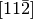
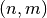

Structure building routines¶
This module contains a variety of structure generating routines.
Module contents for quippy.structures:
Classes
MillerIndex |
Representation of a three of four index Miller direction or plane |
Functions
orthorhombic_slab(at[, tol, min_nrep, ...]) |
Try to construct an orthorhombic cell equivalent to the primitive cell at, using supercells up to at most max_nrep repeats. |
rotation_matrix(unit, y[, z, x, tol]) |
Return 3x3 matrix rotation matrix defining a crack with open surface defined by the plane y`=(l,m.n) or (h,k,i,l), and either crack tip line `z or crack propagation direction x. |
get_bulk_params(bulk, lat_type[, verbose]) |
Return 6-tuple of lattice parameters a, c, u, x, y, z for |
get_bond_lengths(at) |
Return a dictionary mapping tuples (Species1, Species2) to an farray of bond-lengths |
MillerPlane(v) |
Special case of MillerIndex with type="plane" |
MillerDirection(v) |
Special case of MillerIndex with type="direction" (the default) |
angle_between(a, b) |
Angle between crystallographic directions between a=[ijk] and b=[lmn], in radians. |
Attributes
| Name | Value |
|---|---|
quartz_params |
— |
-
class
quippy.structures.MillerIndex[source]¶ Representation of a three of four index Miller direction or plane
A
MillerIndexcan be constructed from vector or parsed from a string:x = MillerIndex('-211') y = MillerIndex('111', type='plane') z = x.cross(y) print x # prints "[-211]" print y # prints "(111)", note round brackets denoting a plane print z.latex() assert(angle_between(x,y) == pi/2.) assert(angle_between(y,z) == pi/2.) assert(angle_between(x,z) == pi/2.)
Methods
latex()Format this MillerIndexas a LaTeX stringparse(s)Parse a Miller index string simplify()Simplify by dividing through by greatest common denominator -
latex()[source]¶ Format this
MillerIndexas a LaTeX string
-
classmethod
parse(s)[source]¶ Parse a Miller index string
- Negative indices can be denoted by:
- leading minus sign, e.g.
[11-2] - trailing
b(for ‘bar’), e.g.112b - LaTeX
\bar{}, e.g.[11\bar{2}](which renders as  in LaTeX)
- leading minus sign, e.g.
Leading or trailing brackets of various kinds are ignored. i.e.
[001],{001},(001),[001],<001>,001are all equivalent.Returns an array of components (i,j,k) or (h,k,i,l)
-
-
quippy.structures.void_analysis(at, grid_size, cutoff, grid, radii)¶ Parameters: at :
Atomsobjectgrid_size : input float
cutoff : input float
grid : in/output rank-2 array(‘d’) with bounds (qp_n0,qp_n1)
radii : in/output rank-1 array(‘d’) with bounds (qp_n2)
References
Routine is wrapper around Fortran routine
void_analysisdefined in file src/libAtoms/Structures.f95.
-
quippy.structures.alpha_quartz_cubic(a, c, u, x, y, z)¶ Non-primitive 18-atom cubic quartz cell
Parameters: a : input float
c : input float
u : input float
x : input float
y : input float
z : input float
Returns: at :
AtomsobjectReferences
Routine is wrapper around Fortran routine
alpha_quartz_cubicdefined in file src/libAtoms/Structures.f95.
-
quippy.structures.find_closest(at, r, n0)¶ Parameters: at :
Atomsobjectr : input rank-1 array(‘d’) with bounds (3)
n0 : input int
shape(qp_closest_list,0)
Returns: closest_list : rank-1 array(‘i’) with bounds (qp_n0)
References
Routine is wrapper around Fortran routine
find_closestdefined in file src/libAtoms/Structures.f95.
-
quippy.structures.sh2(a, c[, z])¶ Creates a 2-atom simple hexagonal lattice with lattice constants of
aandcParameters: a : input float
c : input float
z : input int, optional
Returns: myatoms :
AtomsobjectReferences
Routine is wrapper around Fortran routine
sh2defined in file src/libAtoms/Structures.f95.
-
quippy.structures.find_compatible_supercells(l1, l2, match_tol[, fix_l2, max_m1, max_m2, error])¶ find supercells of two lattices that are compatible (i.e. equal or parallel vectors to some tolerance)
Parameters: l1 : input rank-2 array(‘d’) with bounds (3,3)
lattices of 1st and 2nd structures
l2 : input rank-2 array(‘d’) with bounds (3,3)
lattices of 1st and 2nd structures
match_tol : input float
tolerange for good enough match.
n1 : rank-2 array(‘i’) with bounds (3,3)
output supercells of 1st and 2nd structures that match well enough (new lattices = lattice . n[12] )
n2 : rank-2 array(‘i’) with bounds (3,3)
output supercells of 1st and 2nd structures that match well enough (new lattices = lattice . n[12] )
fix_l2 : input int, optional
if true, don’t allow supercells of l2
max_m1 : input int, optional
max range of supercells to check (bigger is slower)
max_m2 : input int, optional
max range of supercells to check (bigger is slower)
error : in/output rank-0 array(int,’i’), optional
if present, error status return
References
Routine is wrapper around Fortran routine
find_compatible_supercellsdefined in file src/libAtoms/Structures.f95.
-
quippy.structures.imma(a, b, c, u[, z])¶ Creates a 2-atom Imma cell
Parameters: a : input float
b : input float
c : input float
u : input float
z : input int, optional
Returns: myatoms :
AtomsobjectReferences
Routine is wrapper around Fortran routine
immadefined in file src/libAtoms/Structures.f95.
-
quippy.structures.graphite_rhombohedral(a, c[, z])¶ Parameters: a : input float
c : input float
z : input int, optional
Returns: myatoms :
AtomsobjectReferences
Routine is wrapper around Fortran routine
graphite_rhombohedraldefined in file src/libAtoms/Structures.f95.
-
quippy.structures.fcc_z111_ortho(a0)¶ Parameters: a0 : input float Returns: at : AtomsobjectReferences
Routine is wrapper around Fortran routine
fcc_z111_orthodefined in file src/libAtoms/Structures.f95.
-
quippy.structures.find_motif(at, motif[, start, end, mask, find_all_possible_matches, nneighb_only, alt_connect])¶ Subgraph isomorphism identifier based on J.R. Ullmann, JACM 23(1) 31-42 (1976)
Slight modifications are that if we include two unconnected vertices in the subgraph then the corresponding vertices in the isomorphism MUST also be disconnected. i.e. if we don``t include a bond between two atoms it is because it really isn``t there.
Pattern matching problems are combinatorial in time required, so the routine itself has seven different escape routes; the first six try to quickly fail and prevent the main part of the algorithm from executing at all.
atis the atoms structure with connectivity data precalculated to at least first nearest neighboursmotifis an integer matrix describing the connectivity of the region you wish to match. it has dimension (number of atoms, max number of neighbours + 1) motif(i,1) is the atomic number of an atom motif(i,2), motif(i,3) etc. are the indices of atoms to which this atom connects in this motif or zero if there are no more neighbours.E.g. to match a water molecule we could use:
water_motif = reshape( (/ 8, 1, 1, & 2, 1, 1, & 3, 0, 0 /), (/3,3/) )or, alternatively:
water_motif2 = reshape( (/ 1, 8, 1, & 2, 1, 2, & 0, 3, 0/), (/3,3/) )and for an alpha carbon
O | N - C - C | H c_alpha = reshape( (/ 6,6,7,8,1, & 2,1,1,2,1, & 3,4,0,0,0, & 5,0,0,0,0/), (/5,4/) )The routine will identify an optimum atom in the motif which it will try to find in the atoms structure before doing any further matching. The optimum atom is the one which minimises the total number of bond hops required to include all atoms in the motif
matchesis a table containing one line for each match found in the atoms structure or for optimum atoms with indices betweenstartandend. The integers in each line give the indices of the atoms, in the same order as in the motif, which consitute a single match.maskallows individual atoms to be selected for searching, e.g. for preventing a water molecule from being re-identified as an OH, and then later as two hydrogens.if find_all_possible_matches is true, all possible matches, not just non-overlapping ones, are returned. Useful for situations where things are ambiguous and need to be resolved with more information outside this routine
The routine could optionally find hysteretically defined connections between neighbours, if the alt_connect’s cutoff were the same as at.cutoff(_break)
Parameters: at :
AtomsobjectThe atoms structure to search
motif : input rank-2 array(‘i’) with bounds (qp_n0,qp_n1)
The motif to search for
start : input int, optional
Start and End atomic indices for search
end : input int, optional
Start and End atomic indices for search
mask : input rank-1 array(‘i’) with bounds (qp_n2), optional
If present only masked atoms are searched
find_all_possible_matches : input int, optional
if true, don’t exclude matches that overlap
nneighb_only : input int, optional
alt_connect :
Connectionobject, optionalReturns: matches :
TableobjectAll matches
References
Routine is wrapper around Fortran routine
find_motifdefined in file src/libAtoms/Structures.f95.
-
quippy.structures.diamond(a[, z])¶ Creates an 8-atom diamond-structure with cubic lattice constant of
aand atomic numberZ, e.g. in Python:a = diamond(5.44, 14) # Silicon unit cell
Or, in Fortran:
type(Atoms) :: at ... call diamond(at, 5.44_dp, 14)
Parameters: a : input float
z : input rank-1 array(‘i’) with bounds (qp_n0), optional
Returns: myatoms :
AtomsobjectReferences
Routine is wrapper around Fortran routine
diamonddefined in file src/libAtoms/Structures.f95.
-
quippy.structures.unit_slab(axes, a[, atnum, lat_type, c, u, x, y, z])¶ Return a slab of material with the x, y, and z axes desribed by the Miller indices in the array axes (with
x = axes[:,1]),y = axes[:,2]andz = axes[:,3]). The extent of the slab should be given either as(nx, ny, nz)unit cells or as(width, height, nz)where width and height are measured in Angstrom and nz is the number of cells in the z direction.atnum can be used to initialise the z and species properties. lat_type should be of
"diamond"`,"fcc", or"bcc"(default is"diamond")Parameters: axes : input rank-2 array(‘d’) with bounds (3,3)
a : input float
atnum : input rank-1 array(‘i’) with bounds (qp_n0), optional
lat_type : input string(len=-1), optional
c : input float, optional
u : input float, optional
x : input float, optional
y : input float, optional
z : input float, optional
Returns: myatoms :
AtomsobjectReferences
Routine is wrapper around Fortran routine
unit_slabdefined in file src/libAtoms/Structures.f95.
-
quippy.structures.fcc1(a[, z])¶ Creates a 1-atom fcc-structure with cubic lattice constant of
aParameters: a : input float
z : input int, optional
Returns: myatoms :
AtomsobjectReferences
Routine is wrapper around Fortran routine
fcc1defined in file src/libAtoms/Structures.f95.
-
quippy.structures.remove_too_close_atoms(at, distance[, error])¶ Parameters: at :
Atomsobjectdistance : input float
error : in/output rank-0 array(int,’i’), optional
References
Routine is wrapper around Fortran routine
remove_too_close_atomsdefined in file src/libAtoms/Structures.f95.
-
quippy.structures.bulk(lat_type, a[, c, u, x, y, z, atnum])¶ Construct a bulk primitive cell with a given lattice type and lattice parameters
Parameters: lat_type : input string(len=-1)
One of
diamond,bcc,fcc,alpha_quartz,anatase_cubic,anatase, orrutilea : input float
Principal lattice constant
c : input float, optional
u : input float, optional
x : input float, optional
y : input float, optional
z : input float, optional
atnum : input rank-1 array(‘i’) with bounds (qp_n0), optional
Optionally specify atomic numbers
Returns: at :
AtomsobjectReferences
Routine is wrapper around Fortran routine
bulkdefined in file src/libAtoms/Structures.f95.
-
quippy.structures.supercell(a, n1, n2, n3[, supercell_index_name, error])¶ Replicates the unit cell
n1*n2*n3times along the lattice vectors.Parameters: a :
AtomsobjectInput cell
n1 : input int
n2 : input int
n3 : input int
supercell_index_name : input string(len=-1), optional
error : in/output rank-0 array(int,’i’), optional
Returns: aa :
AtomsobjectOutput (big) cell
References
Routine is wrapper around Fortran routine
supercelldefined in file src/libAtoms/Structures.f95.
-
quippy.structures.structure_from_file(struct[, vol_per_atom, vol_per_unit_cell, repeat, z_values_str, error])¶ create a supercell of a structure, read from a file, with chosen volume per atom or volume per unit cell, with desired supercell repeats, and specified Z values. file may contain default Z values as a property Z_values=``Z1 Z2 ...`` structures that begin with . or / are searched for as paths, and everything else is searched for in
QUIP_ARCH/structures/struct.xyzor inHOME/share/quip_structures/struct.xyzParameters: struct : input string(len=-1)
vol_per_atom : input float, optional
vol_per_unit_cell : input float, optional
repeat : input rank-1 array(‘i’) with bounds (3), optional
z_values_str : input string(len=-1), optional
error : in/output rank-0 array(int,’i’), optional
Returns: ret_dup_cell :
AtomsobjectReferences
Routine is wrapper around Fortran routine
structure_from_filedefined in file src/libAtoms/Structures.f95.
-
quippy.structures.map_nearest_atoms(at1, at2, types)¶ Parameters: at1 :
Atomsobjectat2 :
Atomsobjecttypes : input rank-1 array(‘i’) with bounds (qp_n0)
Returns: ret_map_nearest_atoms : float
References
Routine is wrapper around Fortran routine
map_nearest_atomsdefined in file src/libAtoms/Structures.f95.
-
quippy.structures.fcc_z100(a0)¶ Make an FCC 100 surface, such that the repeating squares of the surface are aligned with the cell boundaries
Parameters: a0 : input float Returns: at : AtomsobjectReferences
Routine is wrapper around Fortran routine
fcc_z100defined in file src/libAtoms/Structures.f95.
-
quippy.structures.min_neighbour_dist(at)¶ Parameters: at : AtomsobjectReturns: ret_min_neighbour_dist : float References
Routine is wrapper around Fortran routine
min_neighbour_distdefined in file src/libAtoms/Structures.f95.
-
quippy.structures.rutile(a, c, u)¶ Parameters: a : input float
c : input float
u : input float
Returns: at :
AtomsobjectReferences
Routine is wrapper around Fortran routine
rutiledefined in file src/libAtoms/Structures.f95.
-
quippy.structures.fcc_disloc_malc(a0, nu, n1, n2, n3, d, type)¶ Parameters: a0 : input float
nu : input float
n1 : input int
n2 : input int
n3 : input int
d : input int
type : input string(len=-1)
Returns: at :
AtomsobjectReferences
Routine is wrapper around Fortran routine
fcc_disloc_malcdefined in file src/libAtoms/Structures.f95.
-
quippy.structures.graphite(a, c[, z])¶ Creates a 4-atom graphite lattice with lattice constants of
aandcParameters: a : input float
c : input float
z : input int, optional
Returns: myatoms :
AtomsobjectReferences
Routine is wrapper around Fortran routine
graphitedefined in file src/libAtoms/Structures.f95.
-
quippy.structures.tube_radius(tube)¶ Calcualte average radius of a nanotube
Parameters: tube : AtomsobjectReturns: ret_r : float References
Routine is wrapper around Fortran routine
tube_radiusdefined in file src/libAtoms/Structures.f95.
-
quippy.structures.transform(at_in, t)¶ Transform cell and lattice coordinates by the 3 x 3 matrix t
Parameters: at_in :
AtomsobjectInput
t : input rank-2 array(‘d’) with bounds (3,3)
Returns: at_out :
AtomsobjectOutput
References
Routine is wrapper around Fortran routine
transformdefined in file src/libAtoms/Structures.f95.
-
quippy.structures.graphene_tube(a, n, m, nz)¶ Construct a  nanotube with lattice parameter
aandnzunit cells along the tube length. Also returns the radius of the tube.Parameters: tube :
Atomsobjecta : input float
n : input int
m : input int
nz : input int
ret_r : float
References
Routine is wrapper around Fortran routine
graphene_tubedefined in file src/libAtoms/Structures.f95.
-
quippy.structures.fcc_z111(a0)¶ Parameters: a0 : input float Returns: at : AtomsobjectReferences
Routine is wrapper around Fortran routine
fcc_z111defined in file src/libAtoms/Structures.f95.
-
quippy.structures.graphene_cubic(a)¶ Cubic graphene unit cell with lattice parameter
a.Parameters: a : input float Returns: ret_cube : AtomsobjectReferences
Routine is wrapper around Fortran routine
graphene_cubicdefined in file src/libAtoms/Structures.f95.
-
quippy.structures.hcp(a[, z])¶ Creates a 2-atom hcp lattice with lattice constants of
aParameters: a : input float
z : input int, optional
Returns: myatoms :
AtomsobjectReferences
Routine is wrapper around Fortran routine
hcpdefined in file src/libAtoms/Structures.f95.
-
quippy.structures.graphene_sheet(a, n, m, rep_x, rep_y)¶ Construct a graphene sheet of index with lattice constant
awithrep_xrepeat units in the direction and
direction and rep_yin the direction.
direction.Parameters: a : input float
n : input int
m : input int
rep_x : input int
rep_y : input int
Returns: sheet :
AtomsobjectReferences
Routine is wrapper around Fortran routine
graphene_sheetdefined in file src/libAtoms/Structures.f95.
-
quippy.structures.beta_tin(a, c[, z])¶ Creates a 2-atom beta-tin structure with lattice constants of a and c
Parameters: a : input float
c : input float
z : input int, optional
Returns: myatoms :
AtomsobjectReferences
Routine is wrapper around Fortran routine
beta_tindefined in file src/libAtoms/Structures.f95.
-
quippy.structures.graphene_slab(a, theta, width, height)¶ Construct a slab of graphene of a given with and height, at a given angle.
ais lattice parameter.Parameters: a : input float
theta : input float
width : input float
height : input float
Returns: slab :
AtomsobjectReferences
Routine is wrapper around Fortran routine
graphene_slabdefined in file src/libAtoms/Structures.f95.
-
quippy.structures.imma4(a, b, c, u[, z])¶ Creates a 4-atom Imma cell
Parameters: a : input float
b : input float
c : input float
u : input float
z : input int, optional
Returns: myatoms :
AtomsobjectReferences
Routine is wrapper around Fortran routine
imma4defined in file src/libAtoms/Structures.f95.
-
quippy.structures.beta_tin4(a, c[, z])¶ Creates a 4-atom beta-tin structure with lattice constants of a and c
Parameters: a : input float
c : input float
z : input int, optional
Returns: myatoms :
AtomsobjectReferences
Routine is wrapper around Fortran routine
beta_tin4defined in file src/libAtoms/Structures.f95.
-
quippy.structures.wurtzite(a[, c, z1, z2, u])¶ Creates a 4-atom wurtzite lattice with lattice constants of
aandcParameters: a : input float
c : input float, optional
z1 : input int, optional
z2 : input int, optional
u : input float, optional
Returns: myatoms :
AtomsobjectReferences
Routine is wrapper around Fortran routine
wurtzitedefined in file src/libAtoms/Structures.f95.
-
quippy.structures.anatase_cubic(a, c, u)¶ Parameters: a : input float
c : input float
u : input float
Returns: at :
AtomsobjectReferences
Routine is wrapper around Fortran routine
anatase_cubicdefined in file src/libAtoms/Structures.f95.
-
quippy.structures.bond_angle_mean_dev(at)¶ Parameters: at : AtomsobjectReferences
Routine is wrapper around Fortran routine
bond_angle_mean_devdefined in file src/libAtoms/Structures.f95.
-
quippy.structures.alpha_quartz(a, c, u, x, y, z)¶ Primitive 9-atom trigonal alpha quartz cell, with lattice constants a and c and internal coordinates u (Si), x, y and z (O).
Parameters: a : input float
c : input float
u : input float
x : input float
y : input float
z : input float
Returns: at :
AtomsobjectReferences
Routine is wrapper around Fortran routine
alpha_quartzdefined in file src/libAtoms/Structures.f95.
-
quippy.structures.water()¶ Return an atoms object containing one TIP3P water molecule in a box giving the correct density at 300K
Returns: ret_water : AtomsobjectReferences
Routine is wrapper around Fortran routine
waterdefined in file src/libAtoms/Structures.f95.
-
quippy.structures.fcc(a[, z])¶ Creates a 4-atom fcc-structure with cubic lattice constant of
aParameters: a : input float
z : input int, optional
Returns: myatoms :
AtomsobjectReferences
Routine is wrapper around Fortran routine
fccdefined in file src/libAtoms/Structures.f95.
-
quippy.structures.delaunay_reduce(lat)¶ Parameters: lat : input rank-2 array(‘d’) with bounds (3,3) Returns: ret_reduced_lat : rank-2 array(‘d’) with bounds (3,3) References
Routine is wrapper around Fortran routine
delaunay_reducedefined in file src/libAtoms/Structures.f95.
-
quippy.structures.fcc_11b2_edge_disloc(a0, n1, n2, n3)¶ Parameters: a0 : input float
n1 : input int
n2 : input int
n3 : input int
Returns: at :
AtomsobjectReferences
Routine is wrapper around Fortran routine
fcc_11b2_edge_dislocdefined in file src/libAtoms/Structures.f95.
-
quippy.structures.disloc_noam(at, p, l, b[, close_threshold])¶ Parameters: at :
Atomsobjectp : input rank-1 array(‘d’) with bounds (3)
l : input rank-1 array(‘d’) with bounds (3)
b : input rank-1 array(‘d’) with bounds (3)
close_threshold : input float, optional
References
Routine is wrapper around Fortran routine
disloc_noamdefined in file src/libAtoms/Structures.f95.
-
quippy.structures.bcc(a[, z])¶ Creates a 2-atom bcc-structure with cubic lattice constant of
aParameters: a : input float
z : input int, optional
Returns: myatoms :
AtomsobjectReferences
Routine is wrapper around Fortran routine
bccdefined in file src/libAtoms/Structures.f95.
-
quippy.structures.bcc1(a[, z])¶ Creates a 1-atom primitive bcc-structure with cubic lattice constant of
aParameters: a : input float
z : input int, optional
Returns: myatoms :
AtomsobjectReferences
Routine is wrapper around Fortran routine
bcc1defined in file src/libAtoms/Structures.f95.
-
quippy.structures.sh(a, c[, z])¶ Creates a 1-atom simple hexagonal lattice with lattice constants of
aandcParameters: a : input float
c : input float
z : input int, optional
Returns: myatoms :
AtomsobjectReferences
Routine is wrapper around Fortran routine
shdefined in file src/libAtoms/Structures.f95.
-
quippy.structures.arbitrary_supercell(a_in, i1[, error])¶ construct an arbitrary supercell from a primitive structure and a combination of primitive vectors that form supercell
Parameters: a_in :
AtomsobjectInput (small) cell
i1 : input rank-2 array(‘i’) with bounds (3,3)
combination of primitive lattice vectors to create supercell (a_out.lattice = a_in.lattice . i1). column i specifies output pbc vector i.
error : in/output rank-0 array(int,’i’), optional
if present, returned error status
Returns: a_out :
AtomsobjectOutput (big) cell
References
Routine is wrapper around Fortran routine
arbitrary_supercelldefined in file src/libAtoms/Structures.f95.
-
quippy.structures.diamond2(a[, z1, z2])¶ Creates a 2-atom diamond-structure with cubic lattice constant of
aParameters: a : input float
z1 : input int, optional
z2 : input int, optional
Returns: myatoms :
AtomsobjectReferences
Routine is wrapper around Fortran routine
diamond2defined in file src/libAtoms/Structures.f95.
-
quippy.structures.surface_unit_cell(surf_v, lat[, third_vec_normal, tol, max_n])¶ Parameters: surf_v : input rank-1 array(‘d’) with bounds (3)
surface vector
lat : input rank-2 array(‘d’) with bounds (3,3)
lattice
third_vec_normal : input int, optional
tol : input float, optional
max_n : input int, optional
Returns: i_out : rank-2 array(‘i’) with bounds (3,3)
combination of primitive lattice vectors to create supercell (surf_lattice = latt . i_out). column i specifies output pbc vector i.
References
Routine is wrapper around Fortran routine
surface_unit_celldefined in file src/libAtoms/Structures.f95.
-
quippy.structures.slab(*args, **kwargs)¶ Routine is wrapper around Fortran interface
slabcontaining multiple routines:-
quippy.structures.slab(axes, a, nx, ny, nz[, atnum, lat_type, c, u, x, y, z]) Parameters: - axes (input rank-2 array(‘d’) with bounds (3,3)) –
- a (input float) –
- nx (input int) –
- ny (input int) –
- nz (input int) –
- atnum (input rank-1 array(‘i’) with bounds (qp_n0), optional) –
- lat_type (in/output rank-0 array(string(len=-1),’c’), optional) –
- c (input float, optional) –
- u (input float, optional) –
- x (input float, optional) –
- y (input float, optional) –
- z (input float, optional) –
Returns: myslab –
AtomsobjectRoutine is wrapper around Fortran routine
slab_nx_ny_nzdefined in file src/libAtoms/Structures.f95.
-
quippy.structures.slab(axes, a, width, height, nz[, atnum, lat_type, c, u, x, y, z, even_nx, even_ny]) Parameters: - axes (input rank-2 array(‘d’) with bounds (3,3)) –
- a (input float) –
- width (input float) –
- height (input float) –
- nz (input int) –
- atnum (input rank-1 array(‘i’) with bounds (qp_n0), optional) –
- lat_type (input string(len=-1), optional) –
- c (input float, optional) –
- u (input float, optional) –
- x (input float, optional) –
- y (input float, optional) –
- z (input float, optional) –
- even_nx (input int, optional) –
- even_ny (input int, optional) –
Returns: myslab –
AtomsobjectRoutine is wrapper around Fortran routine
slab_width_height_nzdefined in file src/libAtoms/Structures.f95.
-
-
quippy.structures.orthorhombic_slab(at, tol=1e-05, min_nrep=1, max_nrep=5, graphics=False, rot=None, periodicity=None, vacuum=None, shift=None, verbose=True)[source]¶ Try to construct an orthorhombic cell equivalent to the primitive cell at, using supercells up to at most max_nrep repeats. Symmetry must be exact within a tolerance of tol. If rot is not None, we first transform at by the rotation matrix rot. The optional argument periodicity can be used to fix the periodicity one or more directions. It should be a three component vector with value zero in the unconstrained directions. The vector vacuum can be used to add vacuum in one or more directions. shift is a three component vector which can be used to shift the positions in the final cell.
-
quippy.structures.rotation_matrix(unit, y, z=None, x=None, tol=1e-05)[source]¶ Return 3x3 matrix rotation matrix defining a crack with open surface defined by the plane y`=(l,m.n) or (h,k,i,l), and either crack tip line `z or crack propagation direction x.
-
quippy.structures.get_bulk_params(bulk, lat_type, verbose=True)[source]¶ Return 6-tuple of lattice parameters a, c, u, x, y, z for cell bulk of lattice type lat_type
-
quippy.structures.get_bond_lengths(at)[source]¶ Return a dictionary mapping tuples (Species1, Species2) to an farray of bond-lengths
-
quippy.structures.MillerPlane(v)[source]¶ Special case of
MillerIndexwithtype="plane"
-
quippy.structures.MillerDirection(v)[source]¶ Special case of
MillerIndexwithtype="direction"(the default)